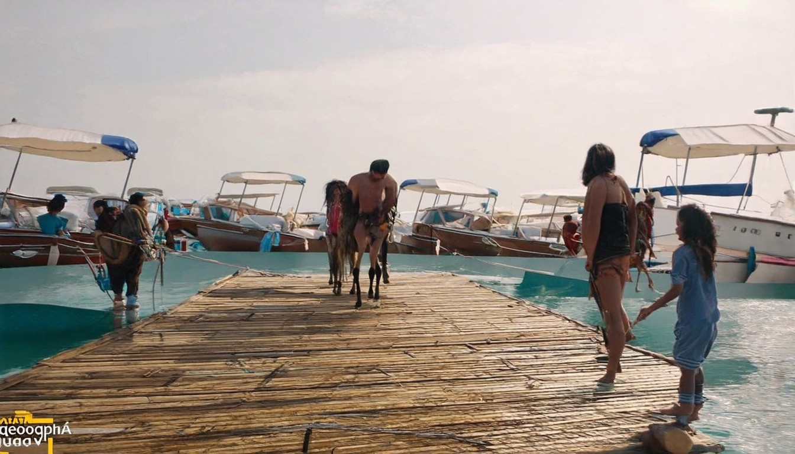
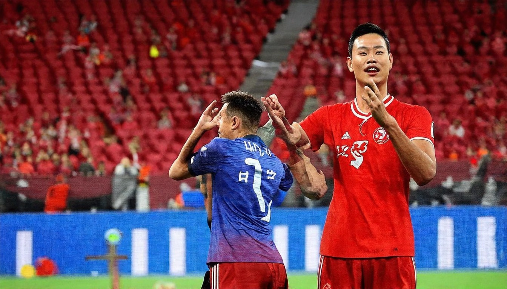
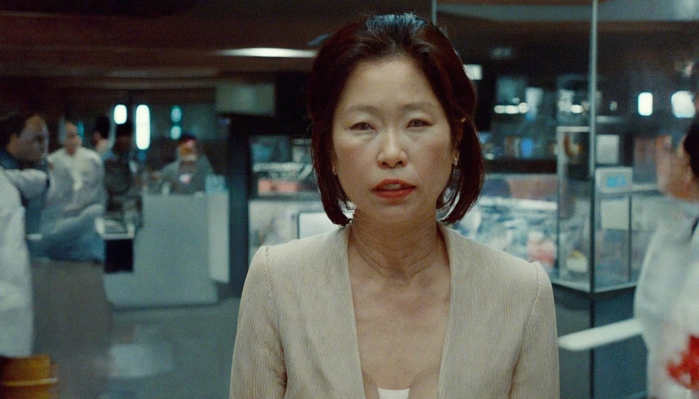
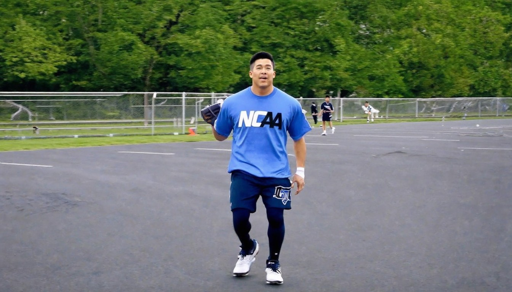
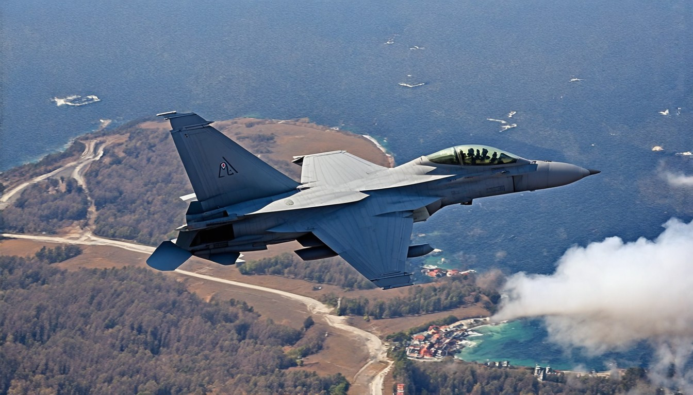
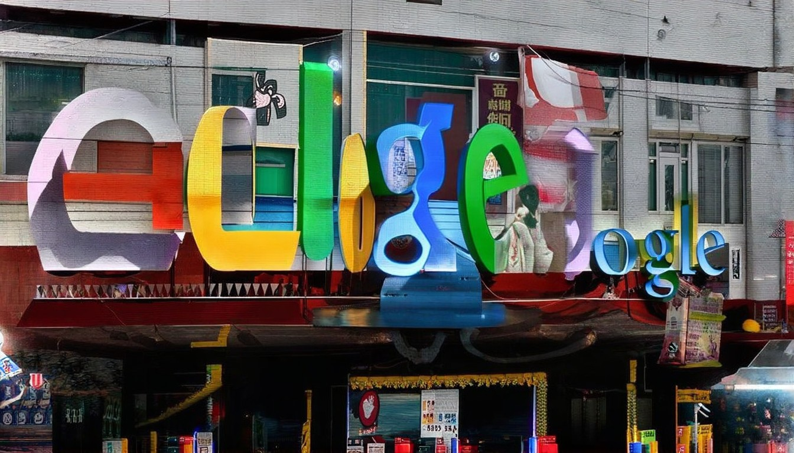
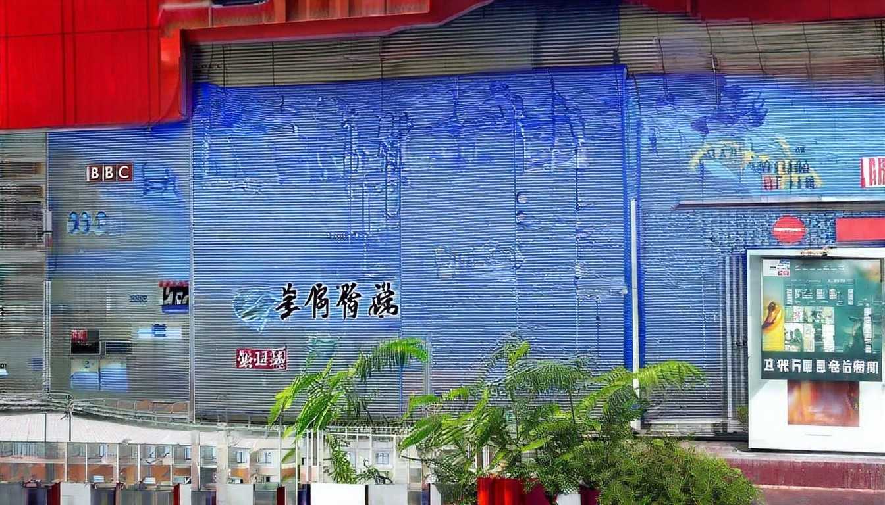

新浪国际热点小时报丨2026年04月05日12时_今日实时国际热点速递
来源：环球【环球网报道】据日本《读卖新闻》4月4日报道，一名41岁伊朗籍男子4月3日死亡，司法解剖显示他身受多处外伤。此前有目击者称该男子遭多人用铁管等
2026年04月08日 · 全球热点速递
← 返回今日新闻来源：环球【环球网报道】据日本《读卖新闻》4月4日报道，一名41岁伊朗籍男子4月3日死亡，司法解剖显示他身受多处外伤。此前有目击者称该男子遭多人用铁管等

热门文章 · 杰米·戴蒙2026年最忧心的五大风险 · 中国如何助伊朗抵御制裁冲击，并为其战争机器“输血” · 2026年可能重创美国经济——或拯救经济的五大风险 · 美以的下一个打击目标：
# 头条. * 中国资产成美以伊冲突“避风港”；伊朗悬赏活捉美军飞行员，已有13名美军死亡；Open 12:31:05. * 专访驾驶张雪机车夺冠的34岁法国“流浪车手”瓦伦丁·德比斯：因为张雪的一句话，我确 15:54:05. * 51万行Claude Code源代码泄露，电子宠物和AI助手遭提前曝光，开发者“抄作业”恐面临法 18:29:55. * 独家对话！带崩全球存储股的谷

2026年世足賽即將開踢。(取材自X平台) 中國人瘋世足賽黃牛票炒破18萬是FIFA官方最高價2倍. 薩倫托橄欖樹在十多年前大規模感染葉緣焦枯 義大利薩倫托「採食文化」獨特野

在国际社会的高度关注之下，朝鲜领导人金正恩与俄罗斯总统弗拉基米尔·普京普京星期三结束被朝鲜官媒称为“历史性会晤”的首脑峰会，全面加强两国在经济和军事安全等领域的

### 我的頻道. ## NCAA／密西根力克康乃狄克奪隊史第2冠 暌違37年再登王座. ## 川普通牒違反國際法？聯國喊震驚 QA解釋他恐涉戰爭罪. ## {{item.title}}. ### {{subItem.title}}. ## 國際最新. ## 中東局勢. ## 俄烏戰爭. ## 大國角力場. ## 國際大社會. 饒舌歌手「肯爺」肯伊威斯特（Kanye West）7月將在英國倫敦的音

F-15E军官获救凸显美军200年传统 华人热议F-15E军官获救凸显美军200年传统 华人热议. 最后期限将至 伊朗促平民当“肉盾”护电厂最后期限将至 伊朗促平民当“肉盾”护电厂. 【时事金扫描】伊朗高层内乱 总统也被威胁【时事金扫描】伊朗高层内乱 总统也被威胁. 川普放话退北约 专家：美欧不致于决裂川普放话退北约 专家：美欧不致于决裂. 川普：伊朗若不妥协 可能一夜之间覆灭川普：伊朗若不妥协

# Google 新闻. [新闻](https://news.google.com/?hl=zh-CN&gl=CN&ceid=CN%3Azh-Hans). [新闻](https://news.google.com/?hl=zh-CN&gl=CN&ceid=CN%3Azh-Hans). [](https://www.google.com/intl/zh-CN/about/products?tab=n

*  ## [法籍華裔毒販囚禁20年後被執行死刑 巴黎「震驚」](https://www.bbc.com/zhongwen/a
# 日经中文网 NIKKEI——日本经济新闻中文版. : 最大的焦点是中东局势的紧张将如何产生影响。中国是世界上最大的原油进口国，但调查中很多观点认为中国具有一定的“承受力”，称中国是受影响最小的国家之一……. 日本经济新闻调查了2025年4月至2026年1月的美国贸易统计数据。拥有全球最大消费市场的美国的进口额比上年同期减少3.6%。美国和中国大陆之间的货物交易减少近3成。 日本对美出口额减